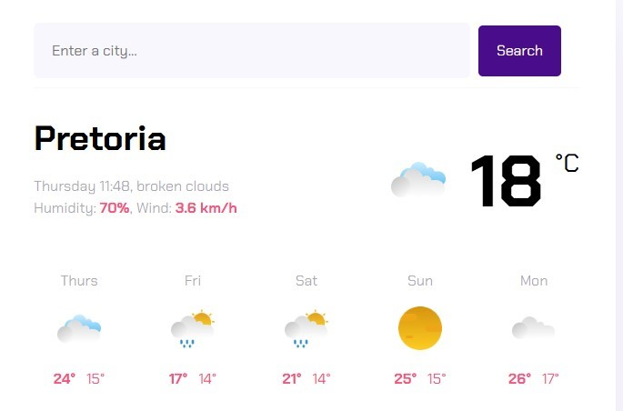

Projects
Take a look at projects I have done and/or are currently working on.
Front-End
Weather Forecast App
 Developed as part of the SheCodes Foundation's Plus Workshop, this weather application allows users to view current weather conditions and a 5-day forecast for any city they search. The app is fully responsive, open-source, and hosted on Netlify. You can explore it here: Weather Forecast App.
This project was built following the completion of the SheCodes Plus Workshop, a self-paced online program for beginners in web development.
- Proficiency in HTML, CSS, and JavaScript
- Using tools like VSCode, GitHub, and deploying with Netlify
- Consuming live APIs to fetch and display weather data dynamically
- Applying modern JavaScript (ES6) techniques for interactivity
Key skills I learned in the development of the app include:
Academic Research
During a research placement at the Instituto de Física Teórica (IFT – Unesp) in São Paulo, Brazil, I explored the climatic determinants of dengue fever using convergent cross mapping techniques. This project involved extensive data mining, cleaning, and analysis in Python and R.
- Utilizing Python libraries such as NumPy and Pandas for data processing
- Visualizing results with Matplotlib (Python) and ggplot2 (R)
- Applying rEDM and pyEDM packages for convergent cross mapping analysis
Key aspects of the research included: